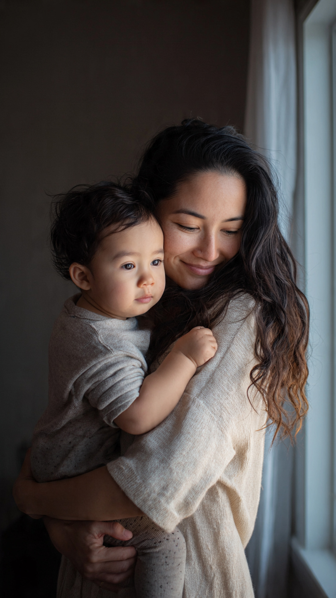

Laura es una emprendedora que se atrevió a soñar grande cuando la mayoría habría aceptado quedarse en sus límites. Como mamá soltera, enfrentó la presión de estar en una posición segura pero limitante, pero decidió tomar un riesgo calculado: crear su propio negocio y ser su propia jefa.
El camino no fue fácil. Los primeros meses fueron desafiantes, llenos de incertidumbre y largas horas de trabajo. Laura tuvo que aprender sobre administración, marketing, finanzas y atención al cliente, todo mientras criaba a sus hijos sola. Cada obstáculo se convirtió en una lección de aprendizaje, cada fracaso en un paso hacia el éxito.
Lo que hace especial a Laura es su capacidad de ver oportunidades donde otros ven problemas. Identifica necesidades en el mercado y crea soluciones innovadoras. Su negocio no solo le ha permitido lograr independencia económica, sino que también ha generado empleo para otras personas, contribuyendo así a su comunidad.
Sus hijos crecen viéndola como un modelo de emprendimiento y valentía. Aprenden que las limitaciones circunstanciales no tienen que definir nuestro futuro, y que con creatividad, determinación y trabajo duro, es posible construir algo propio y significativo. Laura les enseña que ser mamá soltera no significa que no podamos soñar en grande.
Hoy, Laura no solo ha logrado sacar adelante a su familia, sino que también inspira a otras mujeres a emprender. Su historia es un testimonio de que el espíritu emprendedor, combinado con el amor por nuestros hijos y la fe en nosotras mismas, puede llevarnos a lugares inimaginables.
Volver